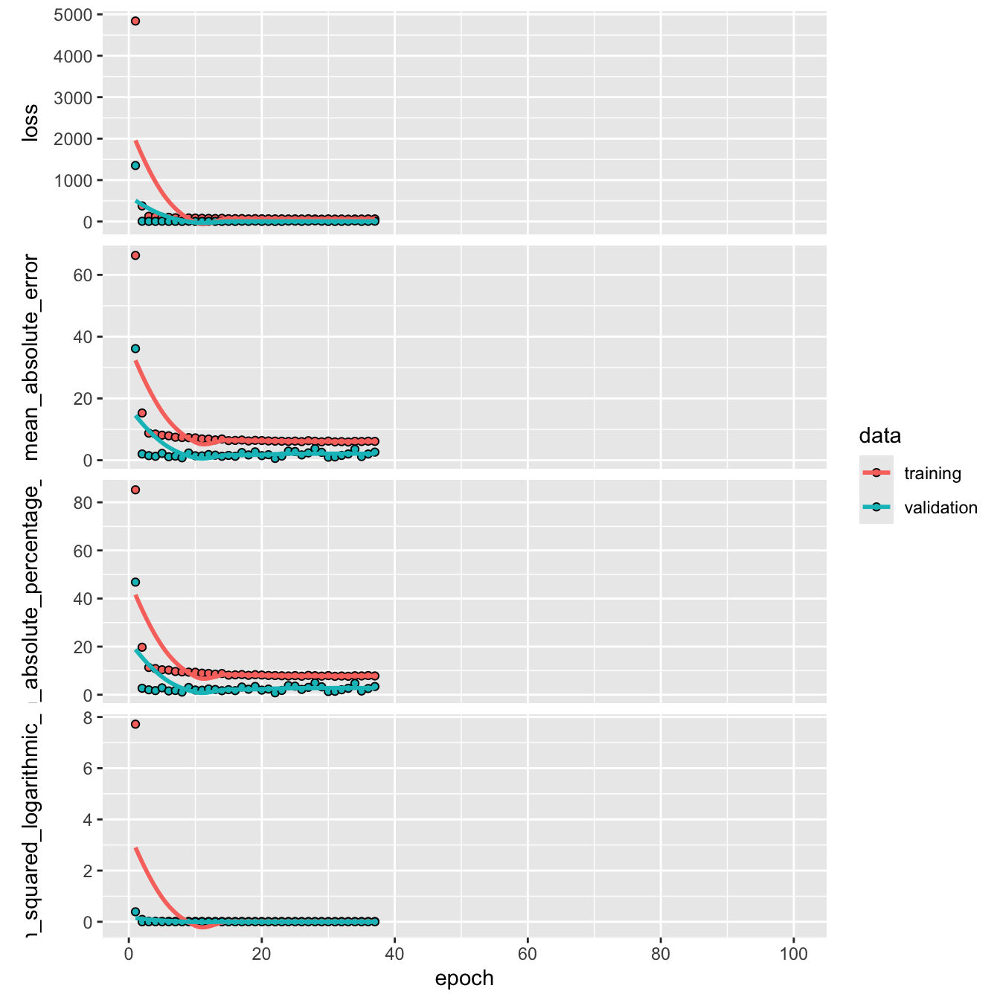

| vars | n | mean | sd | median | trimmed | mad | min | max | range | skew | kurtosis | se | |
|---|---|---|---|---|---|---|---|---|---|---|---|---|---|
| X1 | 1 | 1814 | 78.14 | 17.83 | 79.14 | 78.39 | 16.62 | 6.76 | 205.75 | 198.98 | 0.07 | 1.64 | 0.42 |
Developing Neural Networks to Predict Lung Cancer Mortality from Environmental and Social Risk Factors
Overview
The objective is to predict lung cancer mortality (per 100,000). Smoking history, indoor radon-levels, and Social Vulnerability Indexes (SVI) data are used to develop a neural network to predict the response variable. in The radon data, administered by NIH and NCI, contains lung cancer mortality rates per county. This data is supplemented with county social vulnerability indexes (SVI) administered by the CDC.
We obtain additional data from the Environmental Protection Agency (EPA) for feature engineering. The data set contains two additional features, regions which denote the one of ten regions the county belongs to, and zone, which identify regions with the highest potential for elevated indoor radon levels. Counties may belong in one of three zones where:
- zone 1 indicates the highest potential (> 4 pCi/L)
- zone 2 indicates moderate potential (between 2 and 4 pCi/L)
- zone 3 indicates low potential (2 pCi/L)
Radon, SVI, and EPA data sets contain county level observations and are merged by code in radon data, fips in svi data, and county name_state in zone data. The radon data set is kept intact. Any counties missing SVI or zone data are temporarily filled with NAs and handle in proceeding sections. The combined data contains 2881 observations and 135 features.
70/20/10 proportions are used for the training, validation, and testing split. The training, validation, and testing data contains 1814, 778, and 289 observations respectively.
Missing Values
Shannon County is the only county missing SVI data, and is missing values for key demographic features. The missing value for med_income, area_sqmi, e_totpop, e_hu, and e_hh are obtained online and manually filled. Shannon County has an extremely small population size, such that SVI would be intractable. These values are missing at random and imputed using k-nearest neighbors.
20 counties in the training set are missing EPA region and zone. For region, these values are manually filled with the counties’ true EPA region using mappings from the EPA. For zone, these values are grouped into a new ‘Not Applicable’ factor level.
Exploratory Analysis
Summary statistics for the response variable, lung cancer mortality (lcm), are shown below \(\mu = 78.1 (17.8)\) lcm is distributed normally right-skew, with heavy left tails and wide right tails.
Factor Variables
Redundant demographic features are removed with the exception of Code, state, region, and zone. Features with the f_ prefix are feature flags indicating, whether for a given social vulnerability, a county is in the 90th percentile. We treat these as factor variables. The f_theme* is a summary related similar social vulnerabilities. It is the sum of the social vulnerabilities within a given theme (e.g. socioeconomic). These summary features, prefixed as f_theme* within the data are removed since they are additive (presumably no gain in information) and helps reduce convergence and training time.
The EPA region and zone are shown. There appears to be a linear positive correlation between zone and lcm. We also observe that the mean lcm of the radon data set is identical to the mean lcm of zone 2. We expect this feature to increase our predictive capcity of lcm.
For example, there appears to be a relationship between county area square mile, zone, and lung cancer mortality. Smaller counties in higher zones (2 or 3) will have a higher saturation of radon and increase mortality. Square mileage alone is negatively correlated (lognormal) with lung cancer mortality. With the inclusion of the zone, the relationship between area_sqmi and lcm shifts right. Zone 1 has the lowest radon levels and subsequently lower mortality rates for the same area square mile as other zones.
Interaction is tested between radon and area square mileage respective of lung cancer mortality. Although neural networks can capture non-linear patterns via activation functions, incorporating interaction terms reduces convergence and training time.
H0: There is no interaction between radon levels and the area square mileage.
HA: The full model explains the variability in lung cancer mortality better than the null model, that is lung cancer mortality is dependent on the interaction between radon levels and square mileage.
| Res.Df | RSS | Df | Sum of Sq | F | Pr(>F) |
|---|---|---|---|---|---|
| 1811 | 470485.3 | NA | NA | NA | NA |
| 1810 | 468895.9 | 1 | 1589.441 | 6.135451 | 0.0133405 |
With \(p = .0133\) we can conclude that there is interaction between the two variables, as the residual sum of squares decreases significantly by including the interaction terms. A new feature is created to include these effects during model training.
The relationship between smoking and radon levels with lcm is shown below. We observe that between radon and smoking, smoking is a greater risk factor of lcm. The proportion of the population per county that currently smokes explains 30.25% of the variability among lcm alone. Interestingly enough, radon is observed to be negatively correlated with lcm. The county rank in radon level is also negatively correlated, which is seemingly a contradiction. Counties ranked lower in radon levels are observed to have higher mortality rates. It is possible the correlates are masked by interaction between other features, such as the area (sq mi.) of the county shown above. Despite lower radon levels, the distribution of radon levels also needs to be accounted for. This is just an example. Proper diagnosis of this issue is done by analyzing interaction terms within the data.
[1] 0.3025Numeric
We visually identified the features to log transform. Features with prefixes mp_, m_, ep_, and e_. However, ep_disabl, ep_age65, and ep_age17 are normally distributed and do not need log transformation.
Colinearity
Features are grouped based on prefixes and then plotted in the correlation matrix shown below.
There’s seemingly high co-linearity within estimate e_ and margin of error m_ MOE features. Within the first plot, the estimates are features of fundamentally different measures. For example, e_age65 and e_age17 are estimates of two separate and mostly unrelated age groups. The co-linearity within the estimates plot is most likely due to all of these features increasing as a function of population. For example, the total count of individuals uninsured, mobile homes, or unemployment will be larger in more populous counties. The same logic applies to MOE and these variables are not removed. mort_rank is removed due to data leakage. The table below summarizes features within the data.
| Variable | Description |
|---|---|
| e_nohsdp | persons of 25 with no high school diploma |
| m_nohsdp | (MOE) persons of 25 with no high school diploma |
| ep_nohsdp | percentage persons of 25 with no high school diploma |
| mp_nohsdp | (percentage MOE) persons of 25 with no high school diploma |
| epl_nohsdp | percentile persons of 25 with no high school diploma |
| f_nohsdp | (percentile MOE) persons of 25 with no high school diploma |
MOE estimates are standardized into coefficients of variation cv_* and are kept as additional features for training. Features with a mean cv_* > 1 (shown below) are removed. Observations where cv_* > 1 are removed (44).
| cv_limeng | cv_munit | cv_crowd | cv_groupq |
|---|---|---|---|
| 1.840558 | 0.5103838 | 0.5469353 | 0.335175 |
Model Performance
Five different model architectures are trained to predict lcm:
- Baseline: simple dense neural network with 1 hidden layer (32 neurons) applying Relu activation
- used to establish baseline performance and compare against
- L2 Regularization with Dropout and Early Stopping: dense network, 2 hidden layers, 30% dropout, and early stopping
- used to reduce over fitting by randomly turning 30% of neurons in the preceding layer off
- L2 Regularization: same architecture used in #2 with Tanh activation functions
- test whether bounded activation improves generalization compared to Relu
- Huber Loss Function: dense network using Huber Loss instead of MSE
- Provides robustness to outliers by combining L1 and L2 loss characteristics
10-fold cross validation was used for all models to assess variance-bias on the hold out sets. Model 2 performed the best and was selected for final evaluation on the test set. The results are shown below.

The mean absolute error and root mean square error rounded two one significant figure are close in value. The \(\text{MAE = 1.17}\) (per 100,000) indicates that the model’s predictions are off by the true lung cancer mortality rate by 1.17 (per 100,000). The \(\text{RMSE = 3.09}\) indicates that the there is low variability in the models predictions. On average, the model’s variance adjusted error, or the difference in magnitude between the true values and predicted values after accounting for variability is 3.09 (per 100,000).
The similarity between the RMSE and MAE indicates that there are very few occurrences of significant deviations in predicted values from the true value. The RMSE encapsulates variance by squaring the differences between the true values, and taking the square root to compare predictions on the same scale. The model is shown to have low bias, by generalizing well to unseen data \((MAE = \text{~} 1.17)\), without over or under fitting. The plot shown below, visualizes the error by plotting the models predictions against its true value.
| .metric | .estimator | .estimate |
|---|---|---|
| mae | standard | 1.3710 |
| rmse | standard | 3.4408 |
| rsq | standard | 0.9643 |
Perfect predictions, or the most optimal ‘calibration’, would have \(\beta_1 = 1\) overlayed on the black line \(\hat{y}\). Distances between the line show dissimilarity or deviations between estimates and true values. A significant over prediction is observed in the trough within the range [110, 120] and is highlighted by the blue point. In fact, this value appears to weaken its predictive power for predicted values around that point, as the model is shown to over predict lcm. The average deviation for predicted values near the blue point is significantly higher than those <110.
It would be improper to classify blue prediction value as the only contributing factor to the higher deviations observed along this range. Other factors should be considered. Firstly, the observed deviations along this range may be a result of attributes of the test data, such as outliers, potentially inappropriate assumptions (i.e. imputation methods based on missing values), or improper weights applied. Improper weights can be both a result of exploration and feature engineering, or the model architecture chosen. For example, the true lcm for that observation ~ 65.7 whereas the model predicts almost ~2x (~ 115). This county may have been identified in exploration as Zone 3, which is shown to have the highest radon levels (and presumably mortality rates), but without accounting for interaction between geo-spatial features (such as percentile of housing structures with 10 or more units), it is possible to observe lower than expected radon levels (and presumably lcm) due to this interaction.
Model architecture is also a possible factor. L2 regularization as part of the model architecture may have kept features that do not add to predictive power, subsequently increasing noise, which may be exacerbated by social vulnerability features high margins of error. L1 regularization architecture was not used, so although we cannot compare the effect of feature engineering, this is something that may contribute to the observed results.